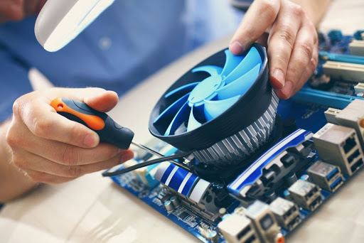
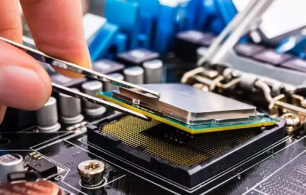

Модернизация компьютера (upgrade) — добавление или замена отдельных компонентов компьютера на более совершенные или быстрые, что вместе с модульным устройством компьютеров позволяет проводить модернизацию и получать более производительное решение.
Что нужно знать при модернизации компьютера замена отдельных комплектующих персонального компьютера (ПК) позволяет поднять производительность той или иной подсистемы. Например, если Вы хотите поднять производительность в компьютерных играх, то в первую очередь следует обратить внимание на процессор и видеокарту. А вот если вы работаете с графическими ректорами или конвертерами видео, то следует нарастить производительность подсистемы (оперативная память и жёсткий диск).
 